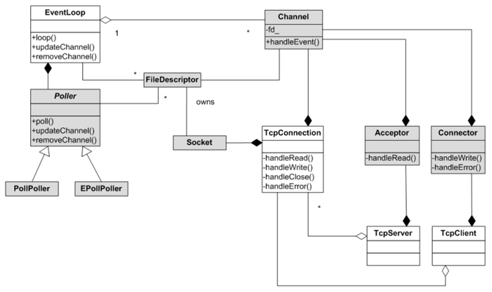

简洁易用的C++11网络库，From:https://github.com/yedf/handy
在整理过去的资料过程中，发现过去有关注过这一个网络库，简单看了一下属于轻量级的实现，因此本文将对该库进行简单的学习之旅，目标是对网络基础知识进一步巩固。
库目前实现了linux和mac环境，需要支持C++11因此gcc的版本要大于4.8，在我的虚拟机ubuntu12.04是要升级gcc版本，然后使用云centos 7，之前安装的cmake版本是2.8.12，与要求的版本大于3.2不匹配，因此先升级cmake
$ cd /tmp
$ wget https://cmake.org/files/v3.3/cmake-3.3.2.tar.gz
$ tar xzvf cmake-3.3.2.tar.gz
$ cd cmake-3.3.2
$ ./bootstrap
$ gmake
$ make install
#FROM : https://blog.csdn.net/fword/article/details/79347356升级后能顺利编译。
既然是高性能网络库，那linux必然是epoll，在raw-examples带有对epoll的测试epoll.cc(水平触发)和epoll-et.cc（边缘触发）
水平触发：当被监控的文件描述符上有可读写事件发生时，epoll_wait()会通知处理程序去读写。如果这次没有把数据一次性全部读写完(如读写缓冲区太小)，那么下次调用 epoll_wait()时，它还会通知你在上没读写完的文件描述符上继续读写，当然如果你一直不去读写，它会一直通知你！如果系统中有大量你不需要读写的就绪文件描述符，而它们每次都会返回，这样会大大降低处理程序检索自己关心的就绪文件描述符的效率！
Edge_triggered(边缘触发)：当被监控的文件描述符上有可读写事件发生时，epoll_wait()会通知处理程序去读写。如果这次没有把数据全部读写完(如读写缓冲区太小)，那么下次调用epoll_wait()时，它不会通知你，也就是它只会通知你一次，直到该文件描述符上出现第二次可读写事件才会通知你！这种模式比水平触发效率高，系统不会充斥大量你不关心的就绪文件描述符！
水平触发和边缘触发
根据linux的man-page中说明边缘触发要求在EPOLL_CTRL_ADD的时候就对文件描述符进行EPOLLIN|EPOLLOUT|EPOLLET事件关注(建议只对客户端套接字)，这能避免不断地使用EPOLL_CTL_MOD修改对EPOLLIN和EPOLLOUT事件地关注。通常情况下监听套接字为水平触发，客户套接字边缘触发，对监听套接字和客户套接字都要设置非阻塞模式。监听套接字使用水平触发的原因是，多个连接同时到达如果使用边缘触发则epoll只会通知一次，有一些TCP连接在就绪队列积累得不到及时处理，如果使用水平触发需要采取而外的处理方式（使用while循环accpet，直到accept返回-1且errno设置为EAGIN表示所有的连接处理完了）
EPOLL的系统函数定义如下：
#include <sys/epoll.h>
typedef union epoll_data {
void *ptr;
int fd;
uint32_t u32;
uint64_t u64;
} epoll_data_t;
struct epoll_event {
uint32_t events; // Epoll events
epoll_data_t data; // User data variable
};
/*
功能：创建epoll对象
[1]size无意义，要求大于0
返回值：成功为非负文件描述符，失败为-1
*/
int epoll_create(int size);
/*
功能：对epoll对象增加，修改或删除感兴趣事件，输入<文件描述符fd, 操作op, 事件epoll_event>
操作OP:增EPOLL_CTL_ADD,改EPOLL_CTL_MOD,删EPOLL_CTL_DEL
事件epoll_event.events:对应文件描述符可读EPOLLIN，可写EPOLLOUT，对方关闭EPOLLRDHUP，异常EPOLLPRI
，错误EPOLLERR，挂起EPOLLHUP，设置边缘触发EPOLLET，设置只触发一次EPOLLONESHOT，EPOLLWAKEUP，EPOLLEXCLUSIVE
返回值：0-成功，-1失败
*/
int epoll_ctl(int epfd, int op, int fd, struct epoll_event *event);
/*
功能：等待内核中的epoll_event事件可读或者timeout到达
[1]epfd是一个epoll实例句柄根据epoll_create得到
[2]epoll_event包含文件描述符和Epoll事件，对应内存由用户开辟
[3]最多事件数，必须大于0
[4]超时事件，单位为ms
返回值：>0有对应个文件描述符发生了事件；0超时到达；-1发生错误
*/
int epoll_wait(int epfd, struct epoll_event *events,
int maxevents, int timeout);下面是代码节选
//epoll.cc 水平触发
//main函数
//0)忽略SIGPIPE信号，避免对等方关闭后触发了写操作引起的SIGPIPE信号，而导致进程退出
::signal(SIGPIPE, SIG_IGN);
//1)定义了回馈的报文，长度1048576是为了测试写缓冲区满了的情况
httpRes = "HTTP/1.1 200 OK\r\nConnection: Keep-Alive\r\nContent-Type: text/html; charset=UTF-8\r\nContent-Length: 1048576\r\n\r\n123456";
for (int i = 0; i < 1048570; i++) {
httpRes += '\0';
}
//2)创建epoll实例
int epollfd = epoll_create(1);
//3)创建socket监听套接字listenfd,设置非阻塞模式，bind,listen和加入到epollfd关注
int listenfd = socket(AF_INET, SOCK_STREAM, 0);
int r = ::bind(listenfd, (struct sockaddr *) &addr, sizeof(struct sockaddr));
r = listen(listenfd, 20);
setNonBlock(listenfd);
updateEvents(epollfd, listenfd, EPOLLIN, EPOLL_CTL_ADD); //epoll_ctrl(epollfd,EPOLL_CTL_ADD,listenfd,ev.EPOLLIN)关注监听套接字的可读事件
//4)循环epoll_wait等待内核事件
for (;;) { //实际应用应当注册信号处理函数，退出时清理资源
loop_once(epollfd, listenfd, 10000); //调用epoll_wait，超时等待为10s，如果有事件返回也会立即返回
}
//loop_once函数
int n = epoll_wait(efd, activeEvs, kMaxEvents, waitms);
for (int i = 0; i < n; i++) {
int fd = activeEvs[i].data.fd;
int events = activeEvs[i].events;
if (events & (EPOLLIN | EPOLLERR)) {
if (fd == lfd) {
handleAccept(efd, fd); //有连接到来，accpet得到对应文件描述符，调用updateEvents加入efd的EPOLLIN关注列表
} else {
handleRead(efd, fd); //客户端有数据，保存连接上下文到map<fd, Con>cons中，根据http的协议（结尾"\n\n"或"\r\n\r\n"）发送httpRes给客户端，注意这里httpRes太长，写write返回小于0且errno为EAGAIN或EWOULDBLOCK，则要表示缓冲区已近满了不能再写了，要修改关注对应套接字的可读可写事件；后续回调可写继续写入，最后写完成后修改为只关注可读事件。
}
} else if (events & EPOLLOUT) {
if (output_log)
printf("handling epollout\n");
handleWrite(efd, fd);
} else {
exit_if(1, "unknown event");
}
//updateEvents函数
void updateEvents(int efd, int fd, int events, int op) {
struct epoll_event ev;
memset(&ev, 0, sizeof(ev));
ev.events = events;
ev.data.fd = fd;
printf("%s fd %d events read %d write %d\n", op == EPOLL_CTL_MOD ? "mod" : "add", fd, ev.events & EPOLLIN, ev.events & EPOLLOUT);
int r = epoll_ctl(efd, op, fd, &ev); //把文件描述符fd加入到epoll对象efd关注
exit_if(r, "epoll_ctl failed");
}值得注意的是水平触发和边缘触发的区别，是在epoll_ctl中ev.events指定，默认为水平触发；后续要特别注意对可写事件的处理上，水平触发需要在写遇到WOULDBLOCK后关注可写事件，写完后取消关注可写事件，而边缘触发只是在epoll_ctl的add操作中指定EPOLLET和同时关注可读可写事件，而后在写write数据中遇到EWOULDBLOCK直接跳出写循环等到内核说可以再写则继续写。关于读read每次都读到返回-1且error为EAGAIN|EWOULDBLOCK，这种策略下就不用在读方面区分是水平模式还是边缘模式。
注意：作者给出的示例中，没有设置监听套接字SO_REUSEADDR，如果服务端断开而任一客户端没断开，服务端重新启动将出想bind失败，错误原因是"Address already in use"会有约2s时间处于TIME_WAIT状态，建议服务端开始开启这个选项，当然也要考虑多次启动和抢占地址的情况出现。
handy文件夹即网络库的核心，最后生成动态库和静态库，测试程序在example和10m两个文件夹，分析网络库将重点关注handy文件夹。handy文件夹主要的功能实现在如下文件中（从CMakeList文件可以看出）
给上面功能分一下类：
//util.h
struct util {
static std::string format(const char *fmt, ...);
}
//util.cpp
string util::format(const char *fmt, ...) {
char buffer[500]; //栈内存
unique_ptr<char[]> release1;
char *base;
for (int iter = 0; iter < 2; iter++) {
int bufsize;
if(iter == 0) { //第一次尝试用char[500]去获取格式化数据
bufsize = sizeof(buffer);
base = buffer;
} else { //第二次尝试用char[30000]去获取格式化数据
bufsize = 30000;
base = new char[bufsize]; //或许需要检查一下30k内存是否分配成功
release1.reset(base); //新内存将由unique_ptr接管，即在程序真正退出前，unique_ptr对象销毁时同时销毁绑定的内存；
}
char *p = base;
char *limit = base + bufsize;
if (p < limit) {
va_list ap;
va_start(ap, fmt);
p += vsnprintf(p, limit - p, fmt, ap);
va_end(ap);
}
// Truncate to available space if necessary
if(p >= limit) {
if(iter == 0) {
continue;
} else {
p = limit - 1;
*p = '\0';
}
}
break;
}
return base;//注意这里是把char* 返回给一个临时结果string;如果是返回char *则会出现unique_ptr销毁一次而外部使用时崩溃，permission denid
}以上主要的疑问：
1）p += vsnprintf(p, limit - p, fmt, ap);理论上p +=max(bufsize)会导致p>=limit出现吗？
--边界情况会出现p==limit而不会大于。
2）引入unique_ptr的作用是什么？是为了委托base的内存回收吗？即本程序会内存泄漏吗？
--unique_ptr的存在时为了函数结束后对成员进行回收，如果不用unique_ptr，那么会增加如下代码释放内存：
string strTemp(base); //多了一次拷贝
if(base != NULL && base != buffer) delete base; base = NULL; //多了一次释放，主要判断不为栈数组，否则非法释放
return strTemp;测试代码如下：
56 string s1 = "hello";
57 for(int i = 0; i < 99; i++) {
58 s1 += "hello";
59 }
60 printf("len(s1)=%d\n", s1.length()); //500
61 string s2 = std::string(util::format("%s", s1.c_str() ) );
62 printf("len(s2)=%d\n", s2.length()); //500//util.h
struct noncopyable {
protected:
noncopyable() = default;
virtual ~noncopyable() = default;
noncopyable(const noncopyable &) = delete;
noncopyable &operator=(const noncopyable &) = delete;
};
struct ExitCaller : private noncopyable {
~ExitCaller() { functor_(); }
ExitCaller(std::function<void()> &&functor) : functor_(std::move(functor)) {}
private:
std::function<void()> functor_;
};
//usage.cc
//...
int fd = open(filename.c_str(), O_RDONLY);
if (fd < 0) {
return Status::ioError("open", filename);
}
ExitCaller ec1([=] { close(fd); });上述的ExitCaller类似LockGuard，或者说go语言的defer，表示当变量离开作用域时调用某一个函数，defer实现如下和上面只差一个lambda匿名函数：
#pragma once
#include <functional>
#define CONNECTION(text1,text2) text1##text2
#define CONNECT(text1,text2) CONNECTION(text1,text2)
class DeferHelper {
public:
DeferHelper(std::function<void ()> &&cb) : cb_(std::move(cb)) {}
~DeferHelper() { if (cb_) cb_(); }
private:
std::function<void ()> cb_;
};
#define defer(code) DeferHelper CONNECT(L,__LINE__) ([&](){code;})封装了一个队列和线程池。
队列的优点时put会检查是否满，pop_wait会等待超时或丢列不为空；
template <typename T>
struct SafeQueue : private std::mutex, private noncopyable {
static const int wait_infinite = std::numeric_limits<int>::max(); //最大等待时间ms
// 0 不限制队列中的任务数
SafeQueue(size_t capacity = 0) : capacity_(capacity), exit_(false) {}
//队列满则返回false，否则push_back到items_中，并使用ready_.notify_one()通知一个去取
bool push(T &&v);
//超时则返回T()，出现在队列为空情况；不超时返回items_中头元素
T pop_wait(int waitMs = wait_infinite);
//超时返回false；不超时，v中存储items_中头元素
bool pop_wait(T *v, int waitMs = wait_infinite);
//有锁获取元素个数，即items_.size
size_t size();
//退出，置exit_标识为true
void exit();
//取退出标识
bool exited() { return exit_; }
private:
std::list<T> items_;
std::condition_variable ready_;
size_t capacity_;
std::atomic<bool> exit_;
void wait_ready(std::unique_lock<std::mutex> &lk, int waitMs); //等待waitMs，调用ready.wait_until函数
};多线程队列则时能利用多个线程消化SafeQueue中的任务
typedef std::function<void()> Task;
extern template class SafeQueue<Task>;
struct ThreadPool : private noncopyable {
//创建线程池,threads指定线程个数建议为cpunum或2*cpunum，
ThreadPool(int threads, int taskCapacity = 0, bool start = true);
//销毁safeQueue和一些打印信息
~ThreadPool();
//使用线程从safeQueue中取元素让后执行
void start();
//停止safeQueue
ThreadPool &exit() {
tasks_.exit();
return *this;
}
//等待线程集合退出，for(auto &t : threads_)t.join();
void join();
//队列满返回false, 使用std::move把右值引用变成引用：tasks_.push(move(task));
bool addTask(Task &&task);
bool addTask(Task &task) { return addTask(Task(task)); }
size_t taskSize() { return tasks_.size(); }
private:
SafeQueue<Task> tasks_;
std::vector<std::thread> threads_;
};struct Status {
Status() : state_(NULL) {}
Status(int code, const char *msg);//state = new char[strlen(msg) + 8];state[0-4]=(strlen(msg) + 8),state[4-8]=code
//...
private:
// state_[0..3] == length of message
// state_[4..7] == code
// state_[8..] == message
const char *state_;//file.h
//把文件filename的内容读到cont中
static Status getContent(const std::string &filename, std::string &cont);
//把cont写到文件filename中
static Status writeContent(const std::string &filename, const std::string &cont);
//写入cont到临时文件tmpName，删除旧文件name,重命名tmpName文件为name文件
static Status renameSave(const std::string &name, const std::string &tmpName, const std::string &cont);
//把文件夹dir中的文件名加入到result中，使用dirent.d中的readdir函数
static Status getChildren(const std::string &dir, std::vector<std::string> *result);
//删除文件，使用unlink删除，c语言中的remove则内部使用了remove，不过remove也能删除目录
static Status deleteFile(const std::string &fname);
//创建目录，使用mkdir(name.c_str(), 0755)，八进制0755表示文件权限为文件所有着7(r4+w2+e1),组5(r4+e1),其他用户5(r4+e1)
static Status createDir(const std::string &name);
//删除文件夹deleteDir
static Status deleteDir(const std::string &name);
//使用stat返回文件的信息
static Status getFileSize(const std::string &fname, uint64_t *size);
//使用rename函数重命名一个文件
static Status renameFile(const std::string &src, const std::string &target);
//使用access判断文件是否存在；或许何以通过stat返回失败-1且errno==ENOENT判断文件不存在
static bool fileExists(const std::string &fname);为了程序的灵活性，一般都会有INI配置文件，INI配置文件的格式如下
[section]
key1 = value1
key2 = 2
作者导出接口如下：
//conf.h
struct Conf {
int parse(const std::string &filename); //解析文件filename的内容到values_
std::string get(std::string section, std::string name, std::string default_value); //取字符串值section[name]，没取到返回default_value
long getInteger(std::string section, std::string name, long default_value);///取整数值section[name]，没取到返回default_value
double getReal(std::string section, std::string name, double default_value);//取浮点数值section[name]，没取到返回default_value
bool getBoolean(std::string section, std::string name, bool default_value);//取布尔值section[name]，没取到返回default_value
std::list<std::string> getStrings(std::string section, std::string name);//取setction[name]对应的值
std::map<std::string, std::list<std::string>> values_;//存储为section.key,value，为什么值是用list来存呢？因为有多行的value的情况。
std::string filename; //对应解析的文件名据实现描述这个conf参考了python的ConfigParser，我喜欢轻量级mars的conf解析
日志是服务器中比较重要的，因为发生异常基本都需要分析日志改善程序，日志库大部分都有glog的影子。对于服务端的日志，因为在多线程中，因此不能写串，有人提倡用prinf而不是ostream，ostream真的不是多线程安全，这一点待探索；日志是能分等级的，常见为DEBUG,INFO,WARNING,FATAL；日志可以是缓冲写或实时写，但要保证程序退出的时候尽量少的丢日志，尤其是异常退出的时候；日志是要支持滚动的，根据具体的要求按天滚动或者按大小滚动；每条日志头部有时间信息，尾部可能有文件和代码行信息。
通过查看logging.h的实现可以发现，日志分等级，日志是一个静态单例通过static Logger &getLogger()返回，然后定义了一些宏对日志进行操作。文件要先设置文件名，然后真正写入是调用logv函数，写入前根据滚动规则获取要写入文件描述符，拼接当前时间等信息和传入的要写入的内容，实时写入到文件中。
实现是目的个人理解是为了让服务在后台运行，测试exmple/daemon.cc的程序，用户输入后终端会退出，但是服务会不退出。实现流程是fork一个子进程，然后父进程执行退出，调用setsid让子进程脱离当前终端的控制不随当前终端结束而结束。
实现了htobe的uint16_t，uint32_t，uint64_t，int16_t，int32_t，int64_t转换
实现了获取DNS信息的getHostByName("www.google.com")
struct Buffer {
Buffer() : buf_(NULL), b_(0), e_(0), cap_(0), exp_(512) {}
~Buffer() { delete[] buf_; } //析构的时候销毁
//统计属性
size_t size() const { return e_ - b_; } //有效数据长度
bool empty() const { return e_ == b_; } //没有有效数据
char *data() const { return buf_ + b_; } //有效数据起地址
char *begin() const { return buf_ + b_; }
char *end() const { return buf_ + e_; }
//内存分配，返回end()结果，分三种情况
//1) end_ + len <= cap,足够内存容纳，不需要修改内存
//2) size() + len < cap_ / 2,可容纳len,但一般以上的内存都在尾部，需要执行moveHead即把有效数据移动到buf_上让b_=0
//3) 其他情况，expand(len),扩张的大小为max(exp_, 2*cap_, size() + len)
char *makeRoom(size_t len);
//分配长度为len的容量，返回数据结束位置
char *allocRoom(size_t len) {
char *p = makeRoom(len);
addSize(len); //e_ += len;
return p;
}
//增加一段数据
Buffer &append(const char *p, size_t len) {
memcpy(allocRoom(len), p, len); //1.调用allocRoom分配足够容量，把新数据进去
return *this;
}
//消费长度为len的数据，注意len一定小于size()
Buffer &consume(size_t len) {
b_ += len;
if (size() == 0)
clear();
return *this;
}
Buffer &absorb(Buffer &buf); //交换this和buf
private:
char *buf_;//内存的首地址
size_t b_, e_, cap_, exp_;//开始位置，结束位置，总容量，exp_期望大小
void copyFrom(const Buffer &b); //深拷贝b，先拷贝参数，然后this.buf_=new char[b.cap_];memcpy(this.buf_+b_,bu.buf_+b_,b.size())poll/epoll能管理的不仅仅是套接字，而是所有的文件描述符，在linux中管道，timefd_create，eventfd都是可以纳入epoll来管理，因此要对epoll做简单的封装，核心的内容是addChannel,removeChannel,updateChannel对channel中的文件描述符fd和事件event的管理。
//poller.h
struct PollerBase : private noncopyable {
int64_t id_;
int lastActive_;
PollerBase() : lastActive_(-1) {
static std::atomic<int64_t> id(0);
id_ = ++id;
}
virtual void addChannel(Channel *ch) = 0;
virtual void removeChannel(Channel *ch) = 0;
virtual void updateChannel(Channel *ch) = 0;
virtual void loop_once(int waitMs) = 0;
virtual ~PollerBase(){};
};
PollerBase *createPoller(); //返回一个继承自PollerBase的PollerEpoll
struct PollerEpoll : public PollerBase {
int fd_; //epoll对象，在构造函数中通过epoll_create得到
std::set<Channel *> liveChannels_; //Channel集合，可认为是要关注<fd,event>集合，不拥有他们的生命周器
// for epoll selected active events
struct epoll_event activeEvs_[kMaxEvents]; //epoll_wait返回的活跃文件描述符
PollerEpoll(); //epoll_create1(EPOLL_CLOEXEC);
~PollerEpoll(); //while (liveChannels_.size()) {(*liveChannels_.begin())->close();}; ::close(fd_);
void addChannel(Channel *ch) override; //加入关注int r = epoll_ctl(fd_, EPOLL_CTL_ADD, ch->fd(), &ev);liveChannels_.insert(ch);
void removeChannel(Channel *ch) override;//取消关注liveChannels_.erase(ch);
void updateChannel(Channel *ch) override;//更新关注int r = epoll_ctl(fd_, EPOLL_CTL_MOD, ch->fd(), &ev);activeEvs_[i].data.ptr = NULL;（这一个是为什么呢？）
void loop_once(int waitMs) override;//等待epoll对象返回，回调对应的事件给通道lastActive_ = epoll_wait(fd_, activeEvs_, kMaxEvents, waitMs);Channel *ch = (Channel *) activeEvs_[i].data.ptr;ch->handleWrite();
};TCP是基于字节流（STREAM）的可靠协议，客户端一条最小的有意义的数据称为一帧，基于流意味着数据帧可能两帧数据同时到达，或者数据帧不全的情况。服务端应用要根据和客户端约定的协议分离出一帧帧数据，响应相应的请求。
//codec.h
struct CodecBase {
// > 0 解析出完整消息，消息放在msg中，返回已扫描的字节数
// == 0 解析部分消息
// < 0 解析错误
virtual int tryDecode(Slice data, Slice &msg) = 0;
virtual void encode(Slice msg, Buffer &buf) = 0;
virtual CodecBase *clone() = 0;
};
//以\r\n结尾的消息
struct LineCodec : public CodecBase {
int tryDecode(Slice data, Slice &msg) override; //找到以\r\n或\n结尾的，返回长度和msg
void encode(Slice msg, Buffer &buf) override; //给msg加上\r\n写入到buf中
CodecBase *clone() override { return new LineCodec(); }
}
//给出长度的消息,[4][len_4][msg_len]
struct LengthCodec : public CodecBase {
int tryDecode(Slice data, Slice &msg) override;//首部8字节，第4-8字节为长度，如果有完成的数据返回长度和msg
void encode(Slice msg, Buffer &buf) override;//给buf增加数据‘mBdT’+len(msg)+msg
CodecBase *clone() override { return new LengthCodec(); }
}UDP是一种简单的面向数据报的运输层协议，不提供可靠性，只是把应用程序传给IP层的数据报发送出去，但是不能保证它们能到达目的地。在一些直播中会使用UDP，有一些游戏开发者也探索了UDP实现可靠性的可能。
UDP创建的流程：
int fd = socket(AF_INET, SOCK_DGRAM, 0); //注意第二个参数为SOCK_DGRAM数据报流
int r = net::setReuseAddr(fd);
fatalif(r, "set socket reuse option failed");
r = net::setReusePort(fd, reusePort);
fatalif(r, "set socket reuse port option failed");
r = util::addFdFlag(fd, FD_CLOEXEC);
fatalif(r, "addFdFlag FD_CLOEXEC failed");
r = ::bind(fd, (struct sockaddr *) &addr_.getAddr(), sizeof(struct sockaddr));读写UDP的命令如下：
//recvfrom
truct sockaddr_in raddr;
socklen_t rsz = sizeof(raddr);
ssize_t rn = recvfrom(fd, buf, bufsize, 0, (sockaddr *) &raddr, &rsz);
if (rn < 0) {
error("udp %d recv failed: %d %s", fd, errno, strerror(errno));
return;
}
//sendto
truct sockaddr_in raddr;
socklen_t rsz = sizeof(raddr);
int wn = ::sendto(fd, buf, bufsize, 0, (sockaddr *) raddr, rsz);http协议应该是每一个网络人直接接触最多的内容，因为BS和部分CS结构网络传输都是用http，因为其简单且描述的内容很全面。
http的交互分为客户端和服务端，客户端也可以是浏览器，客户端发起的请求叫做HTTP请求(HTTP Request),其包括：request line + header + body，header与body之间有一个\r\n；HTTP的请求方法有Get, Post, Head, Put, Delete等。HTTP请求的回复（HTTP Response）包括：status line + header + body （header分为普通报头，响应报头与实体报头）
一个典型的请求：
GET http://nooverfit.com/wp/ HTTP/1.1
Accept: text/html,application/xhtml+xml,application/xml;q=0.9,*/*;q=0.8
Accept-Language: zh-Hans-CN,zh-Hans;q=0.5
Upgrade-Insecure-Requests: 1
User-Agent: Mozilla/5.0 (Windows NT 10.0; Win64; x64) AppleWebKit/537.36 (KHTML, like Gecko) Chrome/70.0.3538.102 Safari/537.36 Edge/18.18362
Accept-Encoding: gzip, deflate
Host: nooverfit.com
Connection: Keep-Alive
Cookie: Hm_lvt_416c770ac83a9d9wewewe=15678wwewe,1568260075; Hm_lvt_bfc6c239dfdfad0bbfed25f88a973fb0=1559dfd232
//HTTP Response
HTTP/1.1 200 OK
Server:
Date: Thu, 19 Sep 2019 16:10:38 GMT
Content-Type: text/html; charset=UTF-8
Transfer-Encoding: chunked
Connection: keep-alive
Vary: Cookie,Accept-Encoding,User-Agent
Upgrade: h2,h2c
Accept-Ranges: bytes
Referrer-Policy:
<html><head><title>This is title</title></head><body><h1>Hello</h1>Now is 20130611 02:14:31.518462</body></html>对http实现来说首先是要解析请求和回复,HttpMsg就是对http协议消息的解析,结果是分离出一个完整的请求帧
struct HttpMsg {
enum Result {
Error,
Complete,
NotComplete,
Continue100,
};
HttpMsg() { HttpMsg::clear(); };
//内容添加到buf，返回写入的字节数
virtual int encode(Buffer &buf) = 0;
//尝试从buf中解析，默认复制body内容
virtual Result tryDecode(Slice buf, bool copyBody = true) = 0;
//清空消息相关的字段
virtual void clear();
std::map<std::string, std::string> headers;
std::string version, body;
// body可能较大，为了避免数据复制，加入body2
Slice body2;
std::string getHeader(const std::string &n) { return getValueFromMap_(headers, n); }
Slice getBody() { return body2.size() ? body2 : (Slice) body; }
//如果tryDecode返回Complete，则返回已解析的字节数
int getByte() { return scanned_; }
//...
}得到完整请求帧后就是分析对应的请求方法和请求资源
struct HttpRequest : public HttpMsg {
std::map<std::string, std::string> args;
std::string method, uri, query_uri; //请求的方法和uri
virtual int encode(Buffer &buf);
virtual Result tryDecode(Slice buf, bool copyBody = true);
//...
}处理完请求之后就是回馈给对应的客户端
struct HttpResponse : public HttpMsg {
std::string statusWord; //example "ok"
int status; // example 200
//...
}到了最后才是最难的网络封装部分，先上一个muduo网络库的图，这个是典型的reactor模式的设计，主要借鉴于java的NIO网络模型的设计

首先有一个事件循环，会实例化一个poller，然后也会导出定时器接口，然后应用层会是tcp或者http服务的套接字会半丁到channel，通过EventLoop的updateloop加入poller对象关注，当有连接到来则回调channel中相关回调，最后传递到客户和服务方。handy的设计像是muduo的简化版本，没那么繁杂。even_base中实现和event_imp事件循环(不断调用poller::loop_once)和计时定时器，Channel通道（文件描述符拥有着，控制关注事件，可读可写事件回调），
//event_base.cpp
//事件循环类
struct EventsImp {
PollerBase *poller_;
SafeQueue<Task> tasks_;
void loop_once(int waitMs) {
poller_->loop_once(std::min(waitMs, nextTimeout_));
handleTimeouts();
}
void EventsImp::loop() {
while (!exit_)
loop_once(10000);
//...
//添加超时任务
void safeCall(const Task &task) { safeCall(Task(task)); }
void safeCall(Task &&task) {
tasks_.push(move(task));
wakeup();
}
//...
};
//通道，封装了可以进行epoll的一个fd
struct Channel {
protected:
EventBase *base_; //一个Channel一定属于一个EventBase
PollerBase *poller_; //base_->poller_
int fd_; //初始化绑定的文件描述符
short events_; //当前的关注事件
int64_t id_; //递增标记
std::function<void()> readcb_, writecb_, errorcb_; //读写错误回调
// base为事件管理器，fd为通道内部的fd，events为通道关心的事件，构造最后会调用poller_->addChannel(this);加入poller中
Channel(EventBase *base, int fd, int events);
//设置回调
void onRead(const Task &readcb) { readcb_ = readcb; }
void onWrite(const Task &writecb) { writecb_ = writecb; }
void onRead(Task &&readcb) { readcb_ = std::move(readcb); }
void onWrite(Task &&writecb) { writecb_ = std::move(writecb); }
//启用读写监听
void enableRead(bool enable); //设置events_;更新通道poller_->updateChannel(this);
void enableWrite(bool enable);
void enableReadWrite(bool readable, bool writable);
bool readEnabled(); //返回是否关注了可读return events_ & kReadEvent;
bool writeEnabled();//返回是否关注了可写return events_ & kWriteEvent;
//处理读写事件
void handleRead() { readcb_(); } //在poller的loop_once循环中，会根据struct epoll_event.data.ptr转换为Channel，如果可读则调用对应的handleRead
void handleWrite() { writecb_(); }//在poller的loop_once循环中，会根据struct epoll_event.data.ptr转换为Channel，如果可写则调用对应的handleWrite
}在TCP数据能收到（回调）后，重要的是如何保存客户端的数据，处理完请求后发送给对应的客户端，因为有多个客户端的存在，因此要使用TcpConn来记录哪些TCP到来了，处理结果要回馈给哪个数据。
//conn.h
// Tcp连接，使用引用计数
struct TcpConn : public std::enable_shared_from_this<TcpConn> {
// Tcp连接的个状态
enum State {
Invalid = 1,
Handshaking,
Connected,
Closed,
Failed,
};
//服务端
static TcpConnPtr createConnection(EventBase *base, int fd, Ip4Addr local, Ip4Addr peer) {
TcpConnPtr con(new C);
con->attach(base, fd, local, peer);
return con;
}
void attach(EventBase *base, int fd, Ip4Addr local, Ip4Addr peer) {
fatalif((destPort_ <= 0 && state_ != State::Invalid) || (destPort_ >= 0 && state_ != State::Handshaking),
"you should use a new TcpConn to attach. state: %d", state_);
base_ = base;
state_ = State::Handshaking;
local_ = local;
peer_ = peer;
delete channel_;
channel_ = new Channel(base, fd, kWriteEvent | kReadEvent);
trace("tcp constructed %s - %s fd: %d", local_.toString().c_str(), peer_.toString().c_str(), fd);
TcpConnPtr con = shared_from_this();
con->channel_->onRead([=] { con->handleRead(con); });
con->channel_->onWrite([=] { con->handleWrite(con); });
}
//发送数据
void sendOutput() { send(output_); }//return ::write(channel_->fd, buf, bytes);if (wd == -1 && (errno == EAGAIN || errno == EWOULDBLOCK)) //写对应fd，如果写失败关注可写事件（水平触发模式）
//收到数据
void handleRead(const TcpConnPtr &con) {
while (state_ == State::Connected) {
input_.makeRoom();
int rd = readImp(channel_->fd(), input_.end(), input_.space());
if(rd > 0) input_.addSize(rd);
}
//...
}
//客户端
template <class C = TcpConn>
static TcpConnPtr createConnection(EventBase *base, const std::string &host, unsigned short port, int timeout = 0, const std::string &localip = "") {
TcpConnPtr con(new C);
con->connect(base, host, port, timeout, localip); //执行connect
return con;
}
public:
EventBase *base_; //属于哪一个事件循环
Channel *channel_; //属于哪一个通道
Buffer input_, output_; //输入和输出缓冲区
Ip4Addr local_, peer_; //本地的套接字
State state_; //连接状态
TcpCallBack readcb_, writablecb_, statecb_;//读写，连入/练出状态回调
std::string destHost_, localIp_;
std::unique_ptr<CodecBase> codec_; //对应codec
};
//服务器
struct TcpServer {
TcpServer(EventBases *bases); //属于哪一个事件循环
int bind(const std::string &host, unsigned short port, bool reusePort = false); //socket,bind,listen,创建listen_channel设置读回调为handleAccept()
static TcpServerPtr startServer(EventBases *bases, const std::string &host, unsigned short port, bool reusePort = false); //创建一个TcpServer,并调用bind函数
void onConnState(const TcpCallBack &cb);//有新的连接连入
// 消息处理与Read回调冲突，只能调用一个
void onConnMsg(CodecBase *codec, const MsgCallBack &cb) {
codec_.reset(codec);
msgcb_ = cb;
assert(!readcb_);
}
private:
EventBase *base_;//属于哪一个事件循环
Ip4Addr addr_; //服务端地址
Channel *listen_channel_; //服务端的Channel
TcpCallBack statecb_, readcb_; //读写回调
MsgCallBack msgcb_; //消息回调
std::unique_ptr<CodecBase> codec_;
void handleAccept();//有新的连接到来，accept得到客户套接字cfd，创建一个TcpConnPtr绑定cfd,设置conn的读写和消息回调
//...
};以上就是handy的基本分析，总结来说算轻量级的muduo，可能还不应该用在生产环境，毕竟花一天多就能看得七七八八。最后就是示例代码了。
//example/echo.cc
#include <handy/handy.h>
using namespace handy;
int main(int argc, const char *argv[]) {
EventBase base;
Signal::signal(SIGINT, [&] { base.exit(); });
TcpServerPtr svr = TcpServer::startServer(&base, "", 2099);
exitif(svr == NULL, "start tcp server failed");
svr->onConnRead([](const TcpConnPtr &con) { con->send(con->getInput()); });
base.loop();
}//example/http-hello.cc
#include <handy/handy.h>
using namespace std;
using namespace handy;
int main(int argc, const char *argv[]) {
int threads = 1;
if (argc > 1) {
threads = atoi(argv[1]);
}
setloglevel("TRACE");
MultiBase base(threads);
HttpServer sample(&base);
int r = sample.bind("", 8081);
exitif(r, "bind failed %d %s", errno, strerror(errno));
sample.onGet("/hello", [](const HttpConnPtr &con) {
string v = con.getRequest().version;
HttpResponse resp;
resp.body = Slice("hello world");
con.sendResponse(resp);
if (v == "HTTP/1.0") {
con->close();
}
});
Signal::signal(SIGINT, [&] { base.exit(); });
base.loop();
return 0;
}